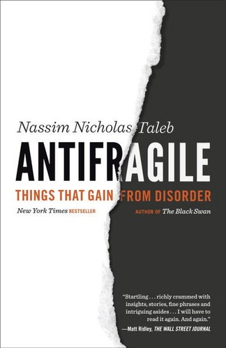

纳西姆·尼古拉斯·塔勒布（Nassim Nicholas Taleb）在2012年由兰登书屋出版了《反脆弱》（Antifragile: Things That Gain from Disorder），这是他"不确定性五部曲"（Incerto）的第四部作品，继《随机漫步的傻瓜》《黑天鹅》和《床边的普罗克拉斯提斯》之后，完成了他对随机性、不确定性与人类认知关系的最核心论述。在此前的著作中，塔勒布揭示了极端事件的不可预测性以及人类对随机性的系统性误判；而《反脆弱》则更进一步，提出了一个全新的概念框架：世界上的事物不仅可以分为"脆弱的"（fragile，受冲击而损坏）和"强韧的"（robust，抵抗冲击而不变），还存在第三种类别——"反脆弱的"（antifragile），即那些在波动、压力、混乱和冲击中反而变得更强的事物。
塔勒布指出，人类的骨骼在承受适度压力后会变得更加坚硬，免疫系统需要接触病原体才能发展出抗体，硅谷的创业生态正是因为高频率的失败才得以持续进化——这些都是反脆弱的实例。与之相反，过度保护和消除波动反而会制造脆弱性：从不经历经济衰退的金融体系会积累隐性风险，从不面对挫折的个体在真正的危机面前会一击即溃。由此，塔勒布提出了几个核心操作原则。其一是"杠铃策略"（Barbell Strategy）：将资源分配在两个极端——大部分放在极其安全的资产上，小部分投入高风险高回报的机会——而避免中间地带的"虚假安全"。这种配置方式确保了下行损失有限而上行收益理论上无限。其二是"否定法"（Via Negativa）：进步往往不是通过添加新事物，而是通过移除有害事物来实现的。少吃加工食品比追逐超级食物更有益，消除愚蠢决策比追求聪明决策更可靠。其三是"小即是美"与"分散化"：小规模的、去中心化的系统比大规模的、集中化的系统更具反脆弱性，因为前者允许局部失败而不导致系统性崩溃。
塔勒布在书中对现代社会中大量"脆弱推手"（fragilista）进行了尖锐的批判。他认为，中央银行家试图消除经济波动的努力、大型企业追求"效率"而消除冗余的做法、学术经济学家用精确模型描述本质上不可预测的复杂系统的倾向，都是在系统性地制造脆弱性。2008年的全球金融危机正是这种脆弱性集中爆发的结果：金融机构为追求短期利润而过度使用杠杆，监管机构因依赖失效的风险模型而未能识别系统性风险，最终导致一场本可在局部消化的问题演变为全球性灾难。塔勒布的批评不仅针对金融行业，也延伸到医疗（过度干预比疾病本身造成更多伤害）、教育（标准化考试压制了真正的学习能力）和政治（大型集权国家比小型城邦国家更脆弱）等领域。
对于投资者和商业决策者而言，《反脆弱》提供了一套超越传统风险管理的思维方式。传统的风险管理关注如何预测和防范风险，而反脆弱的思维方式则追问：如何构建一个即使在无法预测的冲击面前也能受益的体系？查理·芒格长期倡导的"不要把自己搞破产"与"在别人贪婪时恐惧"的原则，从反脆弱的视角来看，正是在确保下行风险有限的前提下保持对上行机会的敞口。这本书的核心洞见在于，不确定性不是需要消除的敌人，而是可以利用的盟友——前提是你的系统结构允许你从中获益而非被其摧毁。